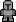

Zombies operate similar to bandits, but:
- If there's an adjacent unit, the zombie will turn it into another zombie!
- Normal zombies can't move or infect units through walls.
- But when a zombie has nowhere else to go, it may build itself a ladder and cross over unmanned walls on the next turn!
- Zombies can never infect
 castles.
castles.
Haunted towns produce a new zombie every turn. To win a map with zombies, you need to not only defeat your rivals, but also clear all haunted towns!
Necromancers are very different from traditional rivals:
- They rely on zombies to expand their territory.
- Eventually, they can spawn powerful Dread Knights.
- They are vicious but predictable. They always blindly attack the most obvious target and have no diplomatic relations with anyone.
Necromancer Lairs are somewhat similar to  towns, but with some major differences:
towns, but with some major differences:
- They don't gather coins, instead they collect mana.
- When a zombie is destroyed on Necromancer's territory, the closest connected Lair gains 1 mana.
- If a Lair or a Haunted Town cannot spawn a zombie, it also generates 1 mana for the nearest Lair.
- Once a Lair has accumulated 6 mana, it will spawn a Dread Knight on the Necromancers turn. The mana is then allocated to maintaining the Dread Knight until it's destroyed.
Dread Knights are elite undead soldiers:
- They are as strong as regular Knights and can move freely across the Necromancers province.
- They need no coin upkeep, but they require a Necromancers Lair with a full mana reserve to maintain their existence.
- Cutting them off from the Lair instantly turns them into a regular zombie.
Unique heroes are as strong as regular heroes, but additionaly:
- Cost no
 coins to upkeep.
coins to upkeep. - Don't turn into bandits when separated from town. Instead, they just become immobile until reconnected.
- Cannot be infected by zombies.